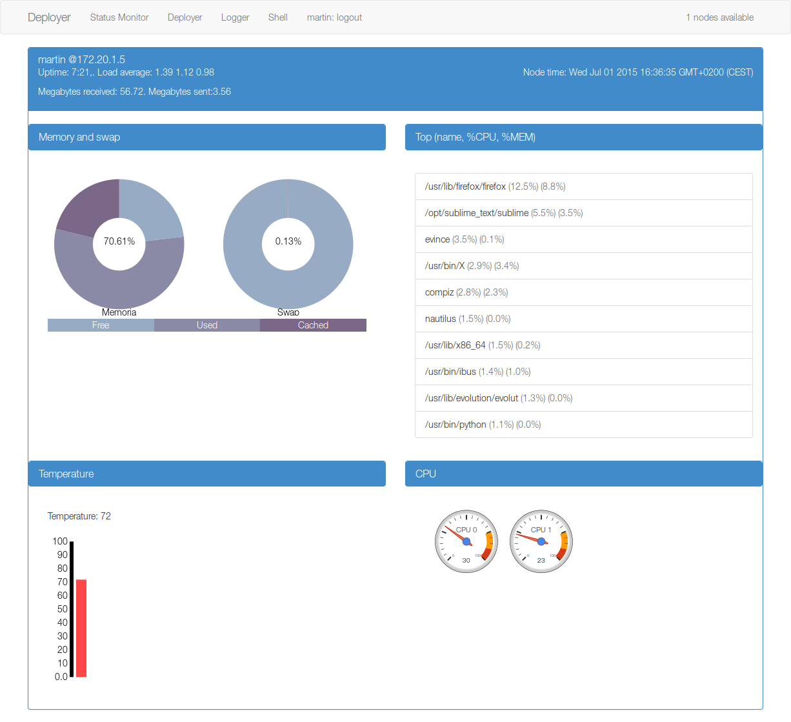

Status Monitor¶
The status monitor provides a live visualization of several important status information of the node, such as the CPU and memory usage, the more CPU-consuming processes or the temperature of the core.
The monitor is pretty straightforward, after the page is loaded the nodes in the network are detected and then the statistics are returned to the user every second.
Each node is displayed in an independent panel.